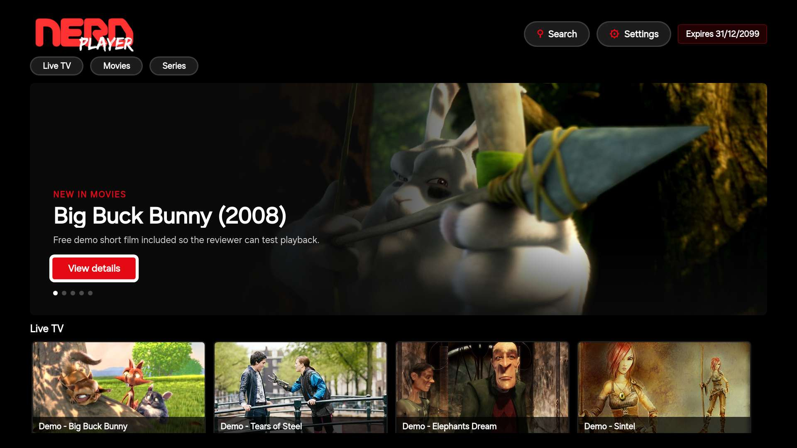
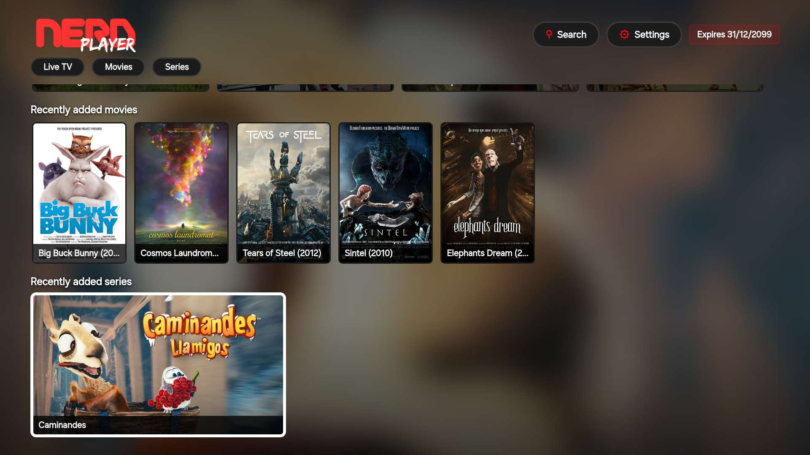

Media player for Samsung Smart TV Reproductor multimedia para Samsung Smart TV
Your content, at home on the big screen. Tu contenido, en la pantalla grande.
Nerdplayer connects your Samsung Smart TV to the media server or provider you already use. Browse live TV, movies and series with nothing but the remote. Nerdplayer conecta tu Samsung Smart TV con el servidor o proveedor que ya usas. Recorre TV en vivo, películas y series solo con el control remoto.
Nerdplayer is a player. It does not include any channels, movies or series: you bring your own. Nerdplayer es un reproductor. No incluye canales, películas ni series: el contenido lo pones tú.

FeaturesFunciones
Everything in its place, one click away. Todo en su sitio, a un clic.
-
01
Live TV with program guideTV en vivo con guía
Channels grouped by category, with what is on now and what comes next when your provider offers a guide. Canales ordenados por categoría, con lo que se emite ahora y lo que sigue cuando tu proveedor ofrece guía.
-
02
Movies and seriesPelículas y series
Posters, synopsis, seasons and episodes. Every title has its own page. Pósters, sinopsis, temporadas y episodios. Cada título tiene su propia ficha.
-
03
Pick up where you left offSigue donde te quedaste
Nerdplayer remembers how far you got and offers to continue. When an episode ends, the next one starts. Nerdplayer recuerda en qué minuto ibas y te ofrece continuar. Al terminar un episodio, empieza el siguiente.
-
04
SearchBúsqueda
Find a movie or a series by name, from a single screen. Encuentra una película o una serie por su nombre, desde una sola pantalla.
-
05
Audio and subtitlesAudio y subtítulos
Switch the audio track or turn on subtitles whenever the video includes them. Cambia la pista de audio o activa los subtítulos siempre que el video los incluya.
-
06
English and SpanishEn español y en inglés
The interface follows the language of your TV. Nothing to set up. La interfaz sigue el idioma de tu televisor. No hay nada que configurar.

ScreensPantallas
Made for the couch. Pensado para el sofá.
Large type, a focus you can always see, and every screen within reach of the arrow keys. Letra grande, un foco que siempre se ve y todas las pantallas al alcance de las flechas.
- ArrowsFlechas
- Move through menus, lists and posters.Recorren menús, listas y pósters.
- OK
- Opens, plays, and goes full screen.Abre, reproduce y pasa a pantalla completa.
- BackAtrás
- Returns to the previous screen.Vuelve a la pantalla anterior.
How it worksCómo funciona
Ready in three steps. Listo en tres pasos.
-
Open NerdplayerAbre Nerdplayer
Start the app on your Samsung Smart TV. Inicia la aplicación en tu Samsung Smart TV.
-
Sign in with your own detailsEntra con tus propios datos
Type the server address, username and password given to you by your provider. Escribe la dirección del servidor, el usuario y la contraseña que te dio tu proveedor.
-
Choose what to watchElige qué ver
Your sign-in stays saved on the TV until you log out from Settings. Tu sesión queda guardada en el televisor hasta que la cierres desde Configuración.
Good to knowConviene saberlo
A player, not a content service. Un reproductor, no un servicio de contenido.
Nerdplayer does not provide, host, sell or distribute channels, movies or series. Everything you watch comes from the server you set up, and you are responsible for having the rights to it. Nerdplayer no provee, aloja, vende ni distribuye canales, películas o series. Todo lo que ves viene del servidor que tú configuras, y eres responsable de contar con los derechos para verlo.
Your server address, username and password are stored only on your TV. They are never sent to the developers. La dirección de tu servidor, tu usuario y tu contraseña se guardan solo en tu televisor. Nunca se envían a los desarrolladores.